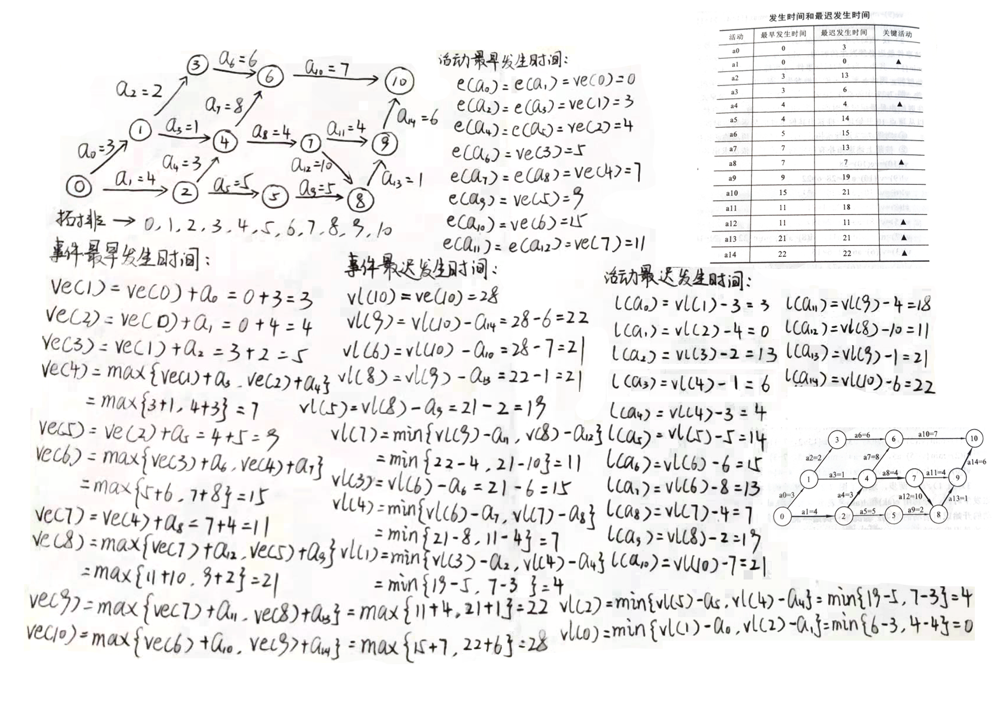
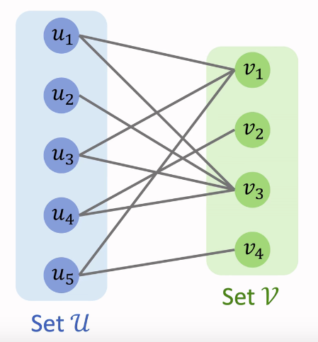

图的概念总结
在数学中，图是描述于一组对象的结构，其中某些对象对在某种意义上是“相关的”。这些对象对应于称为顶点的数学抽象（也称为节点或点），并且每个相关的顶点对都称为边（也称为链接或线）。通常，图形以图解形式描绘为顶点的一组点或环，并通过边的线或曲线连接。 图形是离散数学的研究对象之一。
图的基本概念
图的存储结构
邻接矩阵
邻接矩阵是图的顺序存储结构。一个一维数组存储图中顶点信息，一个二维数组(称为邻接矩阵)存储图中的边或弧的信息。
结点
首先构建结点
c++
/**
* @author: Vsoapmac
* @time: 2021年9月17日
* @use: 结点
**/
class Node{
public:
Node(int id,int data){
this->data = data;
this->id = id;
}
int data;
int id;
};初始化数组
初始化领接矩阵数组
c++
int nodeSize = 5;
// 领接矩阵
int graphMatrix[5][5];
// 领接矩阵有向图的权
double graphMatrixSize[5][5];
// 已阅读的结点
int visit[5];
// 队列或栈
queue<Node*> _queue;
stack<Node*> _stack;
Graph(){
for(int i = 0; i < nodeSize;i++){
for(int j = 0; j < nodeSize;j++){
// 初始化方向
graphMatrix[i][j] = 0;
// 节点的自身的权为0
if(i == j){
graphMatrixSize[i][j] = 0;
}else{
// 初始化路径
graphMatrixSize[i][j] = -1;
}
}
}
}构造领接矩阵
构造领接矩阵
c++（有向、无向）
/**
* @use: 构造有向领接矩阵
* @parameter: 新的结点，结点连接的下一个节点，节点的权
**/
void MatrixBuild(Node* new_node,Node* next_node,double length){
// 连接下一个结点
if(next_node){
graphMatrix[new_node->id][next_node->id] = 1;
graphMatrixSize[new_node->id][next_node->id] = length;
}
}输入参数
c++
Graph gh;
Node* root = new Node(0,0);
Node* first = new Node(1,1);
Node* second = new Node(2,2);
Node* third = new Node(3,3);
Node* forth = new Node(4,4);
Node* fifth = new Node(5,5);
// 连接0 -> 1,0 -> 4
gh.MatrixBuild(root,first,1.1);
gh.MatrixBuild(root,forth,8.0);
// 连接2 -> 3,2 -> 5
gh.MatrixBuild(second,third,5.7);
gh.MatrixBuild(second,fifth,5.0);
// 连接3 -> 1,3 -> 0,3 -> 4
gh.MatrixBuild(third,first,3.2);
gh.MatrixBuild(third,root,2.2);
gh.MatrixBuild(third,forth,3.3);
// 连接4 -> 5
gh.MatrixBuild(forth,fifth,6.0);邻接表
图的遍历算法
深度优先搜索（DFS）
DFS（Depth-First Search）：深度优先搜索属于图算法的一种，其过程简要来说是对每一个可能的分支路径深入到不能再深入为止，而且每个节点只能访问一次。
深度优先遍历图的方法是，从图中某顶点v出发：
- 访问顶点v；
- 依次从v的未被访问的邻接点出发，对图进行DFS；直至图中和v有路径相通的顶点都被访问；
- 若此时图中尚有顶点未被访问，则从一个未被访问的顶点出发，重新进行DFS，直到图中所有顶点均被访问过为止。
深度优先遍历使用的数据结构是栈（Stack），将访问过的节点标记后，并压入栈中，再遍历此时跟栈顶元素相关联的节点，将其中未标记的节点标记，并压入栈中……以此类推，当该栈顶的元素相关联的节点都被访问过了，则该元素弹出栈……直到栈空，遍历完成。
深度优先搜索类似于二叉树的先序遍历
c++（注意，不用栈实现的深度优先搜索算法）
/**
* @use: 深度优先搜索遍历
* @parameter: 根节点
**/
void DFS(Node* root){
if(visit[root->id]!=1){
// 操作数据（存储、输出）
cout << (char)root->data << " ";
// 记录已阅读的结点
visit[root->id] = 1;
// 若结点有连通结点，则遍历结点
if(!root->next_node_list.empty()){
// 初始化迭代器
list<Node*>::iterator iter;
// 遍历领接结点
list<Node*> next_node_list = root->next_node_list;
// 顶点出栈
_stack.pop();
for(iter = next_node_list.begin();iter!= next_node_list.end();iter++){
// 递归遍历到的点
DFS(*iter);
}
}
}
}java（半伪代码）：
int visted[]; // 初始化记录已阅读顶点数组
List<Node> _final; // 初始化深度优先搜索算法最终的运算结果
/**
* @use: 主方法，从某个顶点开始
* @parameter: 整个图和从某个顶点
* @return: 搜索后的结点数组
**/
private void DFS(Graph g, Node node){
if(visted[node.getId()]!=1){
_final.add(node); // 保存在结果数组中
visted[node.getId()]=1;// 记录状态
// 若顶点有连通顶点，遍历
if(!g.visitNext(node).isEmpty()){
Queue<Node> nodeQueue = g.visitNext(node);// 所搜顶点的领接顶点
// 循环领接顶点队列，每个队头出队直到队列为空为止
while(!nodeQueue.isEmpty()){
DFS(g,nodeQueue.poll());
}
}
}
}广度优先搜索（BFS）
广度优先搜索（以下采用广度来描述）是连通图的一种遍历算法。这一算法也是很多重要的图的算法的原型。Dijkstra单源最短路径算法和Prim最小生成树算法都采用了和宽度优先搜索类似的思想。
广度优先搜索别名又叫BFS，属于一种盲目搜寻法，目的是系统地展开并检查图中的所有节点，以找寻结果。
换句话说，它并不考虑结果的可能位置，彻底地搜索整张图，直到找到结果为止。基本过程，BFS是从根节点开始，沿着树(图)的宽度遍历树(图)的节点。如果所有节点均被访问，则算法中止。一般用队列数据结构来辅助实现BFS算法。
广度优先搜索类似于树的层次遍历
BFS遍历图的时候，需要用到一个队列，算法执行过程简单概括如下：
- 任取图中一个顶点访问，入队，并将这个顶点标记为已访问
- 当队列不为空时循环执行，出队，依次检查出队顶点的所有领接顶点，访问没有被访问过的领接顶点并将其入队
- 当队列为空时跳出循环，BFS完成
c++
/**
* @use: 广度优先搜索遍历
* @parameter: 根节点
**/
void BFS(Node* root){
// 顶点入队
_queue.push(root);
// 记录结点被阅读的状态
visit[root->id] = 1;
// 以队列为焦点对图进行操作
while(!_queue.empty()){
// 队列的队头如果有领接顶点则进行入队操作
if(!_queue.front()->next_node_list.empty()){
// 操作数据
cout << (char)_queue.front()->data << " ";
// 初始化迭代器
list<Node*>::iterator iter;
// 遍历领接结点
list<Node*> next_node_list = _queue.front()->next_node_list;
Node* node_save = NULL;
for(iter = next_node_list.begin();iter!= next_node_list.end();iter++){
// 临时存储结点
node_save = *iter;
// 若结点并未阅读，存储结点，并标记阅读状态
if(visit[node_save->id]!=1){
// 递归遍历到的点
_queue.push(*iter);
// 记录结点被阅读的状态
visit[node_save->id] = 1;
}
}
// 队头出队
_queue.pop();
}
}
}java（半伪代码）：
int visted[]; // 初始化记录已阅读顶点数组
List<Node> _final; // 初始化深度优先搜索算法最终的运算结果
/**
* @use: 主方法，从某个顶点开始
* @parameter: 整个图和从某个顶点
* @return: 搜索后的结点数组
**/
public void BFS(Graph g, Node node){
Queue<Node> queue = new LinkedList();// 初始化队列
queue.offer(node);// 起点入队
visted[node.getId()] = 1;// 记录阅读的状态
_final.add(node); // 保存结点
// 在队内操作直到队列为空
while(!queue.isEmpty()){
Node current = queue.poll();
Queue<Node> currentNext = g.visitNext(current);
// 如果结点有领接顶点将领接顶点入队并标记阅读的状态
while(!currentNext.isEmpty()){
Node current1 = currentNext.poll();
// 如果该节点并未阅读则入队和记录
if(visted[current1.getId()] != 1){
queue.offer(current1); // 入队
visted[current1.getId()] = 1;// 记录阅读的状态
_final.add(current1); // 保存结点
}
}
}
}图的最小（代价）生成树算法
以下算法皆用顶点构建生成树，适合稠密图
普里姆（Prim）算法
普里姆算法查找最小生成树的过程，采用了贪心算法的思想。对于包含 N 个顶点的连通网，普里姆算法每次从连通网中找出一个权值最小的边，这样的操作重复 N-1 次，由 N-1 条权值最小的边组成的生成树就是最小生成树。
Prim算法适合稠密图
那么，如何找出 N-1 条权值最小的边呢？普里姆算法的实现思路是：
- 将连通网中的所有顶点分为两类（假设为 A 类和 B 类）。初始状态下，所有顶点位于 B 类；
- 选择任意一个顶点，将其从 B 类移动到 A 类；
- 从 B 类的所有顶点出发，找出一条连接着 A 类中的某个顶点且权值最小的边，将此边连接着的 A 类中的顶点移动到 B 类；
- 重复执行第 3 步，直至 B 类中的所有顶点全部移动到 A 类，恰好可以找到 N-1 条边。
以下为笔者用口语通俗化普里姆算法的过程：
- 将图中所有的结点全部提取出来
- 找出两个结点之间的最短路径（权值最小）的边并记录
- 循环2步骤，直到所有结点连通为止
图示可以查看上面的链接
克鲁斯卡尔（Kruskal）算法
克鲁斯卡尔算法查找最小生成树的方法是：将连通网中所有的边按照权值大小做升序排序，从权值最小的边开始选择，只要此边不和已选择的边一起构成环路，就可以选择它组成最小生成树。对于 N 个顶点的连通网，挑选出 N-1 条符合条件的边，这些边组成的生成树就是最小生成树。
Kruksal算法常用于稀疏图
以下为笔者用口语通俗化克鲁斯卡尔算法的过程：
- 将图中所有的结点全部提取出来
- 将所有的边的权值全部排序
- 连接所有权值最小的边
- 若存在回路，比较通往同一结点的两条路径的权值，哪条最小取哪条
- 所有的结点连通后结束
图示可以查看上面的链接
最短路径
迪杰斯特拉(Dijkstra)算法
迪杰斯特拉算法是典型最短路径算法，用于计算一个节点到其他节点的最短路径。它的主要特点是以起始点为中心向外层层扩展(广度优先遍历思想)，直到扩展到终点为止。
基本思想
- 通过Dijkstra计算图G中的最短路径时，需要指定一个起点D(即从顶点D开始计算)。
- 此外，引进两个数组S和U。S的作用是记录已求出最短路径的顶点(以及相应的最短路径长度)，而U则是记录还未求出最短路径的顶点(以及该顶点到起点D的距离)。
- 初始时，数组S中只有起点D；数组U中是除起点D之外的顶点，并且数组U中记录各顶点到起点D的距离。如果顶点与起点D不相邻，距离为无穷大。
- 然后，从数组U中找出路径最短的顶点K，并将其加入到数组S中；同时，从数组U中移除顶点K。接着，更新数组U中的各顶点到起点D的距离。
- 重复第4步操作，直到遍历完所有顶点。
弗洛伊德(Floyd)算法
弗洛伊德算法计算图中各个顶点之间的最短路径，如果求图中任意一对顶点间的最短路径，则通常使用弗洛伊德算法。弗洛伊德算法算法不能解决带有“负权回路”（或者叫“负权环”）的图，因为带有“负权回路”的图没有最短路。
Floyd算法采用动态规划的思想，分多个阶段解决问题
若图中有n个顶点($V_0$~$V_1$),求图中每一对页点之间的最短路径分n个阶段
- 初始化，在没有其它顶点中转的情况下，求得各顶点间的最短路径
- 如果在各顶点间增加$V_0$作为中转点，求得各顶点间新的最短路径
- 增加$V_1$作为中转点，求得各顶点间新的最短路径
- 增加$V_2$作为中转点，求得各顶点间新的最短路径。
- $\cdots$
- 最后增加$V_{n-1}$作为中转点，求得各顶点间最终的最短路径。
初始化矩阵
c++
// 复制权矩阵
double MatrixSize[nodeSize][nodeSize];
for(int i = 0; i < nodeSize;i++){
for(int j = 0; j < nodeSize;j++){
MatrixSize[i][j] = graphMatrixSize[i][j];
}
}
// 初始化中转结点矩阵
int MatrixMiddle[nodeSize][nodeSize];
// 为中转结点矩阵赋初始值
for(int i = 0; i < nodeSize;i++){
for(int j = 0; j < nodeSize;j++){
// 中转结点矩阵的值初始值为-1
MatrixMiddle[i][j] = -1;
}
}核心算法
c++
// 第一层循环，中转次数
for(int k = 0; k < nodeSize;k++){
// 第二层循环，矩阵的行
for(int i = 0; i < nodeSize;i++){
// 第三层循环，矩阵的列
for(int j = 0; j < nodeSize;j++){
// A[i][j] > A[i][k] + A[k][j]?A[i][j] = A[i][k] + A[k][j]:A[i][j]
if(MatrixSize[i][j] > MatrixSize[i][k] + MatrixSize[k][j]){
// 赋值
MatrixSize[i][j] = MatrixSize[i][k] + MatrixSize[k][j];
cout << MatrixSize[i][j] << endl;
// 改变中转次数
MatrixMiddle[i][j] = k;
}
}
}
}算出最短路径和路径
AOV和AOE网
拓扑排序
AOV
概念：在现代化管理中，人们常用有向图来描述和分析一项工程的计划和实施过程，一个工程常被分为多个小的子工程，这些子工程被称为活动（Activity)，在有向图中若以顶点表示活动，有向边表示活动之间的先后关系，这样的图简称为AOV网。它是一种可以形象地反映出整个工程中各个活动之间的先后关系的有向图。
AOV图没有回路
总结：AOV网是一种用结点表示活动、用有向边表示活动先后关系的有向无环图
拓扑排序：找到活动的先后顺序
实现
- 从图中找出一个没有前驱的结点（入度为0）的结点并输出
- 从图中删除该结点和全部以它为起点的有向边
- 重复步骤1和2，直到图为空
拓扑排序的结果不唯一
逆拓扑排序：
- 从图中找出一个没有后继的结点（出度为0）的结点并输出
- 从图中删除该结点和全部以它为终点的有向边
- 重复步骤1和2，直到图为空
AOE
概念：在现代化管理中，人们常用有向图来描述和分析一项工程的计划和实施过程，一个工程常被分为多个小的子工程，这些子工程被称为活动（Activity)，在带权有向图中若以顶点表示事件，有向边表示活动，边上的权值表示该活动持续的时间，这样的图简称为AOE网。
AOE网中，最大路径长度的路径称为关键路径。完成整个工期的最短时间就是关键路径长度所代表的时间。关键路径上的活动称为关键活动。关键路径是个特殊的概念，它既代表了一个最短又代表一个最长，它是图中的最长路径，又是整个工期所完成的最短时间。
总结：AOE网是一种用结点表示事件、用边表示活动、用边的权值表示完成活动的开销（如完成活动需要的时间）的有向无环图
AOE网有以下特点：
- 只有一个入度为0的结点，称为开始结点（源点），表示整个工程的开始
- 只有一个出度为0的结点，称为结束结点（汇点），表示整个工程的结束
- 只有在某结点所代表的事件发生后，从该节点出发的各有向边所代表的活动才能开始
- 只有在指向某结点的各有向边所代表的活动全部都结束后，该节点所代表的事件才能发生
- AOE网中，有些活动可以并行地进行
AOE网用于表示工程，为了保证工程的进度，我们需要关心：
- 每个子项目最早和最晚完成的时间
- 每个子项目最早和最晚的开始时间
事件最早发生时间按拓扑排序的顺序计算，最迟发生时间按逆拓扑排序的顺序计算。
- 缩短关键活动的时间，可以缩短工程的工期
- 当关键活动缩短到一定的程度时，关键活动可能会变成非关键活动
- 如果关键活动耗时增加，整个工期将延长
设事件最早发生时间符号(ve)，事件最迟发生时间(vl)，活动最早发生时间(e)，活动最迟发生时间(l)，时间余量(d)，箭头的另一端为开端，则：
- ve = 开端事件 + 活动消耗时间（拓扑排序的顺序）
- vl = 箭头端事件 - 活动消耗时间（逆拓扑排序的顺序）
- e = 活动开端的ve
- l = 活动箭头端的vl - 活动消耗时间
- d = l - e（d = 0为关键路径点）

AOV和AOE之间的关系
相同点：都是有向无环图
不同点：AOE网的边表示活动，边有权值，边代表活动持续时间；顶点表示事件，事件是图中新活动开始或者旧活动结束的标志。AOV网的顶点表示活动，边无权值，边代表活动之间的先后关系。
二部图（二分图）
二分图又称作二部图，是图论中的一种特殊模型。顶点集V可分割为两个互不相交的子集，并且图中每条边依附的两个顶点都分属于这两个互不相交的子集，两个子集内的顶点不相邻。
如果某个图为二分图，那么它至少有两个顶点，且其所有回路的长度均为偶数，任何无回路的的图均是二分图。

二分图判断
对于二分图的判断方法最常见的是染色法
给一个无向图。要给图上每个顶点染色，并且使任意相邻的顶点染色不同。并且最多用两种颜色。如果可以进行二分图染色，证明是一个二分图。
对于判断是否是一个二分图的方法可以用深度优先搜索算法（DFS）和广度优先搜索算法（BFS）两种方式去实现。
本博客所有文章除特别声明外，均采用 CC BY-SA 4.0 协议 ，转载请注明出处！